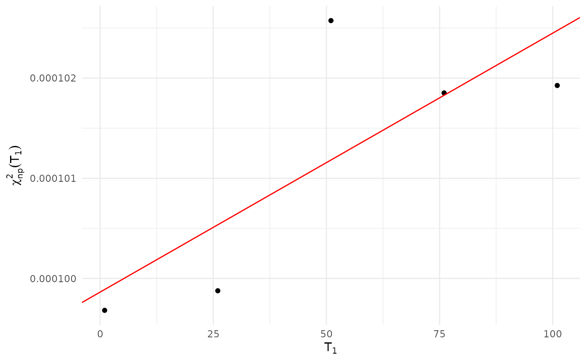
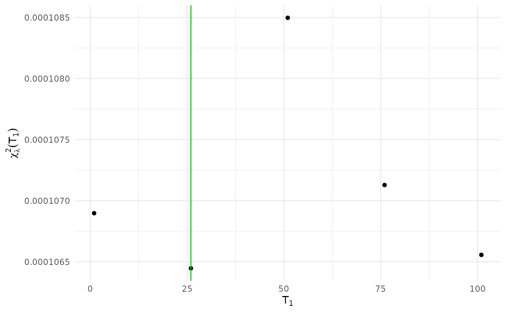

Lagrange Regularization of a Rolling-Window LPPLS Calibration
Source:R/lppls_lagrange.R
lppls_lagrange.RdDetermines the optimal calibration start time \(T_1^*\) by Lagrange
regularization of the normalized residual sum of squares, following
Demos & Sornette (2019). It is a post-processing step on a rolling-window
calibration (lppls_rolling()): the per-window residual sums of squares are
corrected for the linear bias induced by the shrinking number of
observations, and \(T_1^*\) is the minimizer of the regularized objective
\(\chi^2_{\lambda^*}(T_1)\).
Arguments
- x
An object of class
"lppls_rolling"fromlppls_rolling().- p
Integer, number of parameters subtracted in the \(\chi^2_{np}\) denominator (default 7). Use
p = 0to omit the correction (thesis / Demos & Sornette (2019) form).
Value
An object of class "lppls_lagrange": a list with
- table
Data frame with columns
T1,n(calibration length),chi_sq_npandchi_sq_lambda.- rolling
The input
lppls_rolling()object.- trend
The fitted
lmobject forchi_sq_np ~ T1.- intercept, slope
OLS trend coefficients \(\beta_0, \beta_1\).
- lambda
The regularization multiplier \(\lambda^* = -\beta_1\).
- T2
The common calibration end \(T_2\).
- p
The parameter count used in the denominator.
- t1_star
The optimal start time \(T_1^*\).
Details
For the rolling calibration x, the normalized residual sum of squares is
$$\chi^2_{np}(T_1) = \frac{1}{n_{cal}(T_1) - p} \sum_{i = T_1}^{T_2} r_i^2,$$
where the sum is the calibration-region residual sum of squares
(x$table$sse_cal), \(n_{cal}(T_1)\) is the window's calibration length and
\(p\) is the number of parameters subtracted. p = 0 reproduces the
“p-correction omitted” form used by Demos & Sornette (2019) and in the
thesis; p = 7 (the default) subtracts the full LPPLS parameter count
\(\Psi = (t_c, m, \omega, A, B, C_1, C_2)\).
The bias is modelled as a linear trend \(\chi^2_{np}(T_1) = \beta_0 + \beta_1 T_1\) fitted by ordinary least squares. The regularized objective is $$\chi^2_{\lambda^*}(T_1) = \chi^2_{np}(T_1) - \lambda^* (T_2 - T_1), \qquad \lambda^* = -\beta_1,$$ which has zero trend in \(T_1\). The optimal start time is \(T_1^* = \arg\min_{T_1} \chi^2_{\lambda^*}(T_1)\). Adding a constant to the regularized objective does not change its minimizer, so the choice of \(T_2\) in the \(-\lambda^*(T_2 - T_1)\) term shifts the curve vertically but leaves \(T_1^*\) unchanged.
References
Demos, G., & Sornette, D. (2019). Comparing nested data sets and objectively determining financial bubbles' inceptions. Physica A, 524, 661-675. doi:10.1016/j.physa.2019.04.050
Examples
set.seed(3630)
N <- 300
log_p <- eval_lppls(seq_len(N), A = 8, B = -0.025, C1 = 0.0015, C2 = 0.001,
tc = N + 1, m = 0.6, omega = 8) + rnorm(N) * 0.01
roll <- lppls_rolling(
log_price = log_p,
t1_seq = seq(from = 1, by = 25, length.out = 5),
hold_out = 20, fh = 30,
fit_args = list(lower = c(0.1, 6, -0.03, 0.8),
upper = c(0.9, 13, -1e-14, 1e6),
m_init = 0.5, o_init = 8, num_searches = 1)
)
## The series is LPPLS throughout, so every window is already LPPLS and there
## is no bias trend to remove: lambda comes out close to zero. On a series
## whose bubble starts part-way through, chi^2_np falls as T1 approaches the
## start, and lambda is positive.
lag <- lppls_lagrange(roll, p = 0)
lag
#> LPPLS Lagrange regularization
#> Windows (T1): 5 (from 1 to 101)
#> T2 (cal. end): 280
#> p (denominator correction): 0
#> Trend: chi^2_np = 9.9863e-05 + (2.58632e-08) * T1
#> lambda* = -beta1 = -2.58632e-08
#> Optimal T1* = 26
chi_sq_np_plot(lag)

chi_sq_lambda_plot(lag)
